Mnema · web mockups
Five ways to bring the site onto the app's new design
The app was redesigned, the website wasn't. These five landing pages are built from the app's own design kit and use real screenshots of the app, so the site and the app finally look like one product.
Start from 03 Recall anything for the hero (you try the product in the first screen) and 01 Window for everything below it. 02's pinned status bar is a good extra if you want one memorable touch.
01The five directions
Every page has the same story as today's site (record, recall, ask, insights, privacy, price) and the same jargon-free copy. They differ in how they show the app. Each one opens in light or dark from your system, with a button to switch.
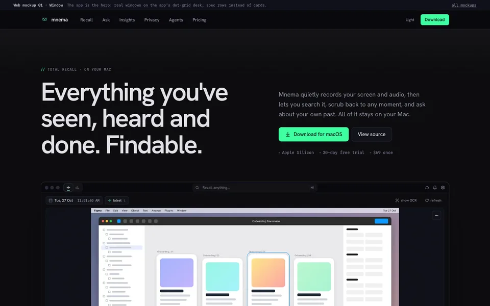
01 · WindowThe app is the heroA left-aligned headline over the app's dot-grid, the real Timeline window under it. Each feature is one window with short spec rows beside it. Closest to the app, lowest risk.
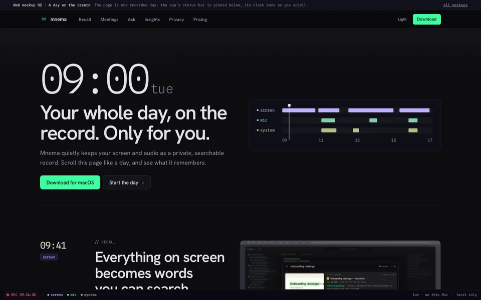
02 · A day on the recordThe page is a recorded dayThe app's status bar is pinned to the bottom. Scrolling runs its clock from 09:00 to 18:00 and switches its screen, mic and system lanes per section. It ends “paused, you stepped away.”
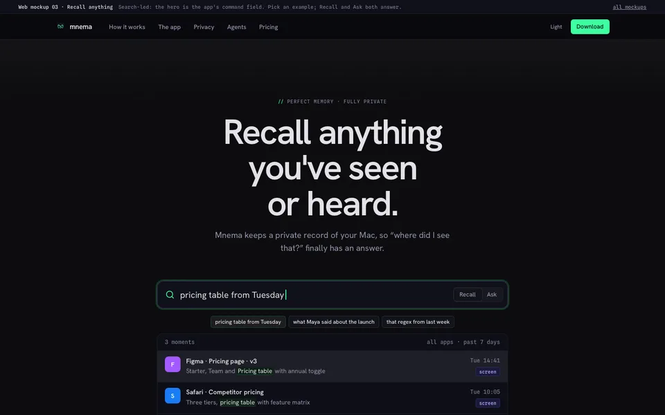
03 · Recall anythingSearch is the heroThe hero is the app's command field, scaled up. Click an example and the panel answers with result rows and highlighted matches. Switch to Ask for an answer with numbered sources.
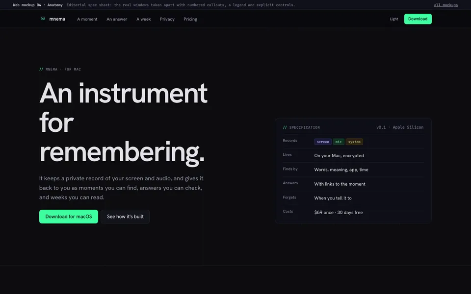
04 · AnatomyAn editorial spec sheetA visible column grid and a spec-table hero. The Timeline and Ask windows are taken apart with numbered callouts, ←/→ controls, a status line and a legend. Privacy is a table.
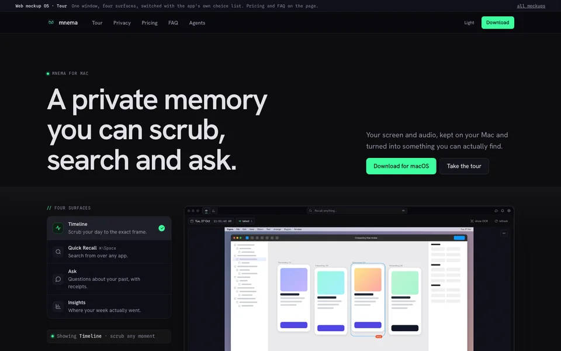
05 · TourOne window, four surfacesThe app's choice list switches between Timeline, Quick Recall, Ask and Insights. Arrow keys work too. Pricing and the FAQ sit on the same page.
06 · Recall + Window03 on top, 01 belowThe picked direction: the search-field hero from 03, then 01's full window, three pillars, feature rows and privacy rows.
01bThe rest of the site, in 06's style
Every other page on today's site, restyled with its real copy kept. The four comparison pages share one layout, so one mockup stands for all four. 06's menu and footer link to these.
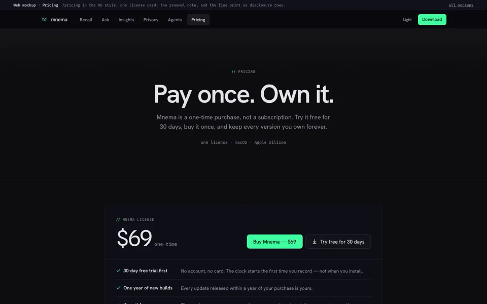
PricingOne card, one price$69 once with the five "included" rows, the optional $29/yr renewal, and the four FAQ answers.
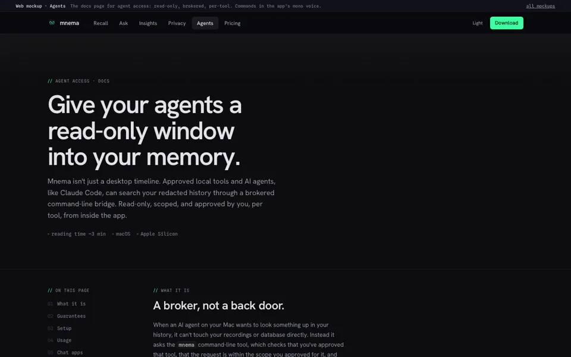
AgentsThe technical pageThe CLI broker docs: a four-step request flow, the six guarantees as spec rows, setup and usage in mono code panels, MCP config.
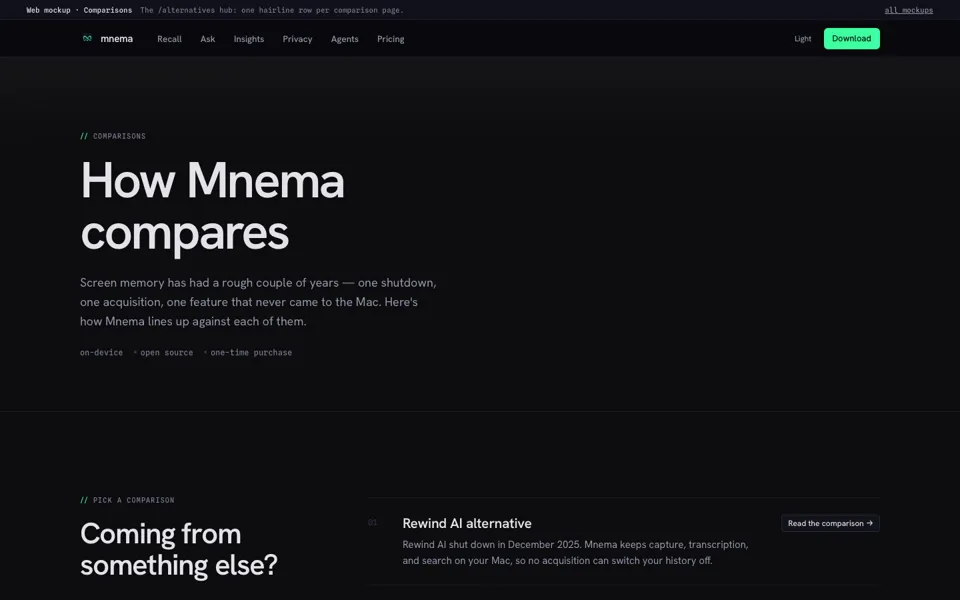
ComparisonsThe hubThe four comparison pages as numbered rows with a link each.
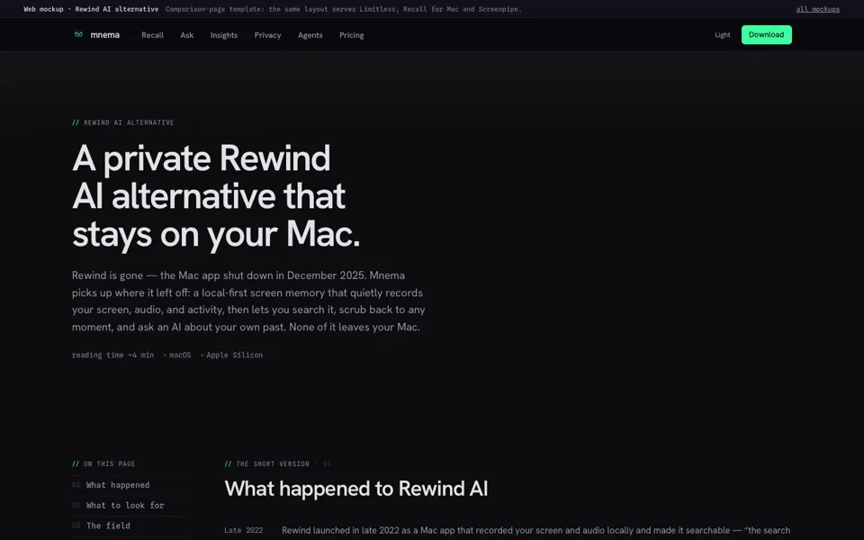
Rewind AI alternativeTemplate for all four comparisonsDated history rows, the four things to look for, the comparison table (Mnema column highlighted; stacks on phones), FAQ, download panel. Limitless, Recall for Mac and Screenpipe use the same layout.
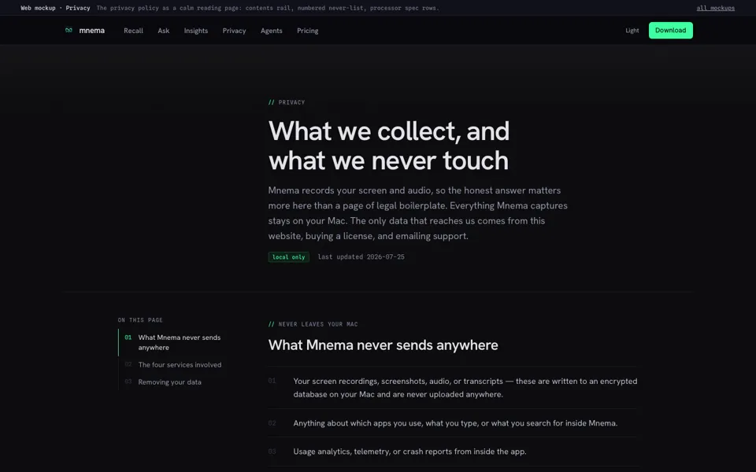
PrivacyA calm reading pageEvery word of the policy kept. A contents list that follows you, the never-sent list, the four services as spec rows.
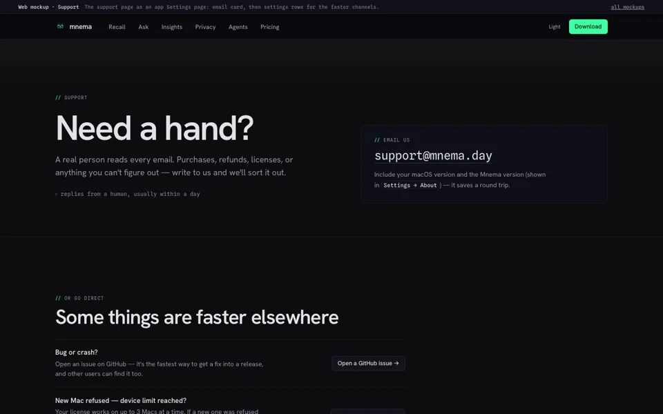
SupportEmail firstThe support address in the hero, then GitHub issues and device limits as settings-style rows.
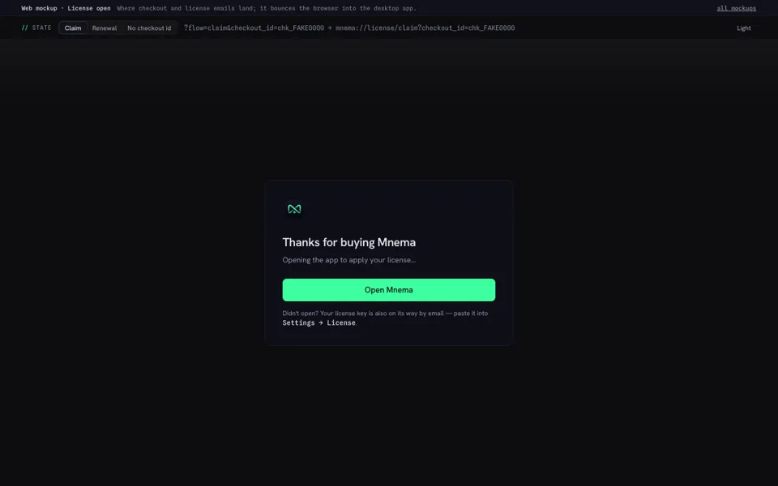
License · openWhere checkout landsA small dialog-style card with a state switcher: claim, renewal, and no checkout id. No site menu, same as today.
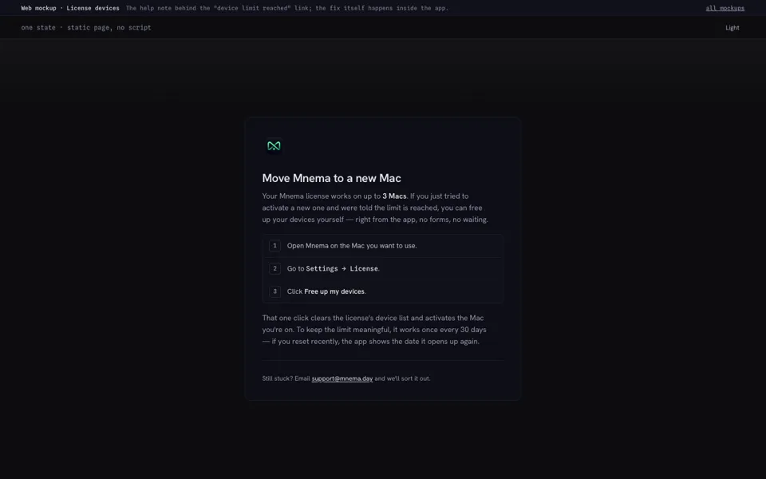
License · devicesMove to a new MacThe three steps to free up devices and the once-every-30-days rule, as one static card.
02What changes from today's site
All five pages link the app's kit directly (../redesign/kit.css, the same tokens and fonts the app ships), plus a thin web layer in site.css for the nav, page-sized type, screenshot frames and footer.
| Part | Today's site | Mockups (the app's rules) |
|---|---|---|
| Green | Glowing CTA and ambient glow | Flat green, only for the one main button, focus and matches |
| Recording | A green pulsing dot | Red, a steady dot with a ring, like the app's status bar |
| Motion | Blinking carets, looping mocks | One entrance on load. Nothing loops; things move when you scroll or click |
| Buttons | Mono labels | The app's buttons: sans labels, one primary per view |
| Depth | Shadows and glows | Surface lightness plus a 1px hairline; dot-grid as the only texture |
| Sources | All green | The app's own colours for screen, mic and system audio |
| Product shots | Old UI, hand-built fake mocks | The real redesigned app, in both themes |
03How the screenshots were made
The running app hides its own window from screen capture, so the shots don't come from your real app or your data. Instead the app's real interface ran in a browser with every backend call answered by invented data: a made-up working week, made-up projects, and first names only.
No real screen recordings. Every “captured screen” is a drawn placeholder: grey code lines, wireframe cards, a fake notes page.
Letter tiles, not real brand logos.
Timeline, Quick Recall (search and ask), Ask chat, Insights overview, journal and a subject. Light and dark each.
One visible model name. The Ask shots show “Claude Sonnet 4.5” in the composer because a provider has to be set up. Swap it if you'd rather show a local model.
04Open questions
- 1Which hero?Search (03), window (01), the day (02), the spec sheet (04) or the tour (05). They can mix.needs you
- 2Light or dark by default?Today's site is dark first. The mockups follow the system setting.needs you
- 3An audio shotThe transcript drawer with speakers wasn't shot yet; 02 draws a transcript in HTML instead.can add